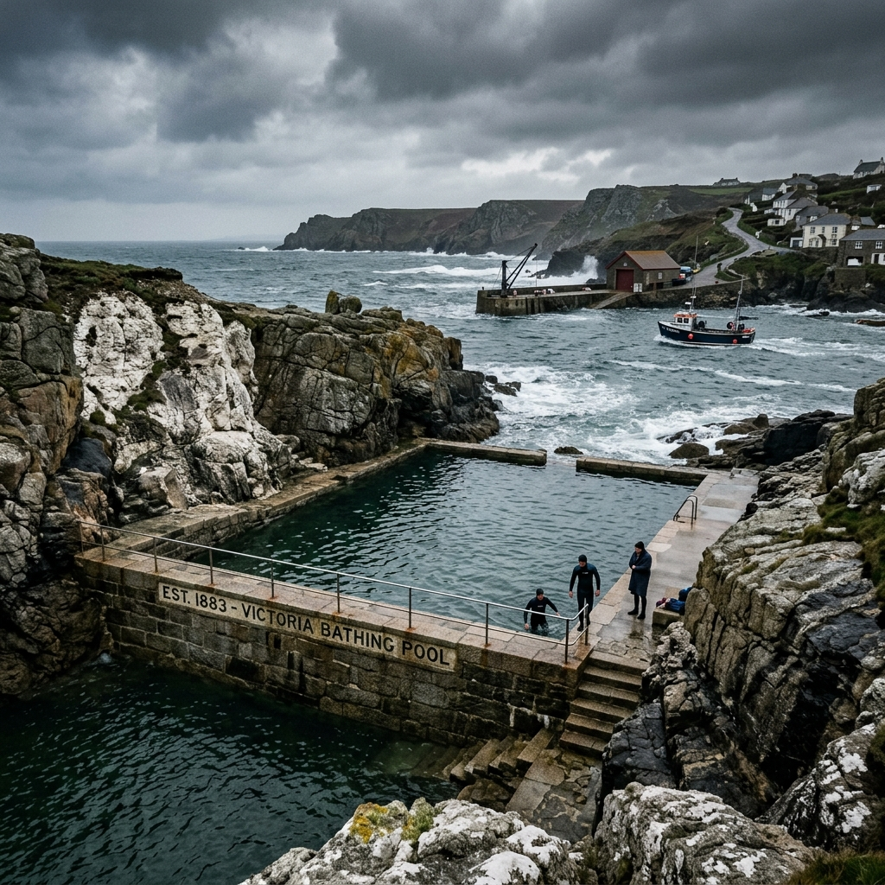

The Tidal Vault
The Tidal Vault

Grounding the Silent Strain of Offshore Industry.
A dedicated, subterranean vestibular sanctuary engineered inside a historic Kent tidal pool to restore maritime professionals.
The offshore environment imposes an unnatural physical tax. Constant low-frequency vibrations from turbine gearboxes, the endless pitch and roll of service vessels, and the high-pressure atmosphere of hyperbaric chambers combine to scramble the delicate fluid systems of the human inner ear. The Tidal Vault exists solely to correct this cumulative mechanical strain. Operating within the subterranean granite vaults of the restored 1883 Broadstairs tidal pool, our clinical marine therapies systematically eliminate the phantom motion, chronic dizziness, and acute sleep disturbances that plague engineers, divers, and mariners.
The Quarry & The Pool
Constructed directly within the colossal, hand-cut granite walls of the historic 1883 Broadstairs Tidal Bathing Pool, The Tidal Vault stands as a testament to coastal permanence and architectural resilience. Originally carved from the dense chalk reefs of the Isle of Thanet to harness the raw power of the North Sea, the structure has been meticulously repurposed into a clinical sanctuary.
Its subterranean layout utilizes the original stone filtration channels, allowing the relentless, natural tidal swell to naturally flush and replenish our holding reservoirs twice a day. This deep integration with the marine environment ensures that the water used in our therapies remains mineral-dense, intensely cold, and completely unfiltered by harsh municipal chemicals. The heavy stone architecture provides more than historical interest; it actively grounds the facility, shielding the interior from external electromagnetic interference and acoustic pollution, creating a silent, unshakeable bedrock where profound physiological recovery can finally take place.
The Industrial Toll
For maritime professionals, the physical toll extends far beyond muscular fatigue. Extended deployment aboard Service Operation Vessels (SOVs) and the constant, microscopic ocular tracking required while suspended on moving crane platforms invariably leads to acute vestibular ocular reflex strain. The brain is forced to continuously calculate micro-adjustments against a moving horizon, establishing a false baseline of motion.
When returning to solid ground, this calculation fails to halt, manifesting as Mal de Debarquement Syndrome—a chronic sensation of phantom motion and destabilizing vertigo. Confined living quarters, intense pressure changes in hyperbaric diving bells, and the relentless mechanical vibration of industrial diesel engines further scramble the inner ear's delicate fluid systems. This specific, deep-seated sensory fatigue requires more than standard rest; it demands targeted, mechanical re-calibration to strip away the ingrained vibration and restore the body's natural perception of absolute stillness.
The Three Pillars of Grounding
Hydro-Equilibrium
Immerses the body in high-density, hyper-saline North Sea water, neutralizing gravity and allowing the frantic firing patterns of the vestibular nerve to halt completely. This clinical isolation fundamentally resets the spatial map.
Bio-Mineral Infusion
Utilizes heavy thermal lamination with wild-harvested bladderwrack seaweed to provide a deep, tactile weight that acts as an external sensory anchor while drawing out cellular waste through extreme peripheral vasodilation.
Acoustic Dampening
Places the patient in a sub-surface resonance pool where targeted, low-frequency counter-vibrations actively cancel out the residual internal hum of industrial turbines, forcing the central nervous system into deep, healing theta patterns.
Our restorative methodology is strictly physical, eschewing pharmacological interventions in favor of raw mechanical and chemical re-calibration. The process is divided into three core physical stages designed to systematically strip away the sensory trauma of the offshore environment.
View Treatment ProtocolsThe Resident Log
"After six straight weeks aboard an SOV repairing turbine blades in heavy North Sea swells, my inner ear was completely destroyed. I couldn't sleep without feeling the room violently pitch and roll. The 72-hour grounding residency at The Tidal Vault completely eradicated the phantom motion. I am finally sleeping a full eight hours, anchored in absolute stillness."
— Thomas Graves
Lead Turbine Technician, London Array
"The constant low-frequency vibration of the diesel engines and the heavy sea state had left me with chronic, debilitating vertigo and splitting tension headaches. The sub-surface acoustic dampening pools literally stripped the mechanical hum from my bones. It is the only protocol that resets my equilibrium."
— Captain Sarah Jenkins
Master Pilot, Estuary Services
"Saturation diving applies immense pressure to the vestibular system. The heavy bladderwrack lamination combined with the dark flotation chambers gave me back my spatial awareness and removed the lingering nausea."
— David O'Connor
Saturation Diver, North Sea Operations